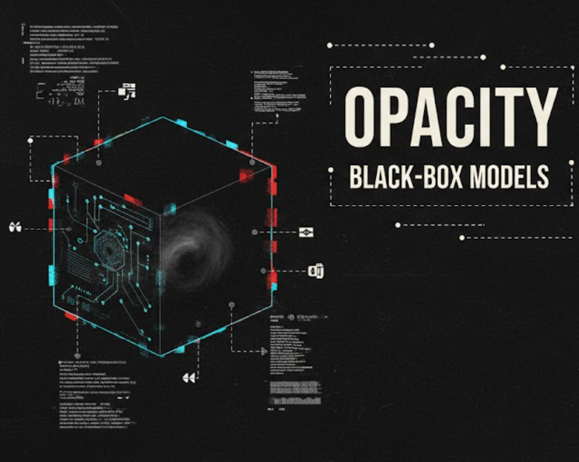
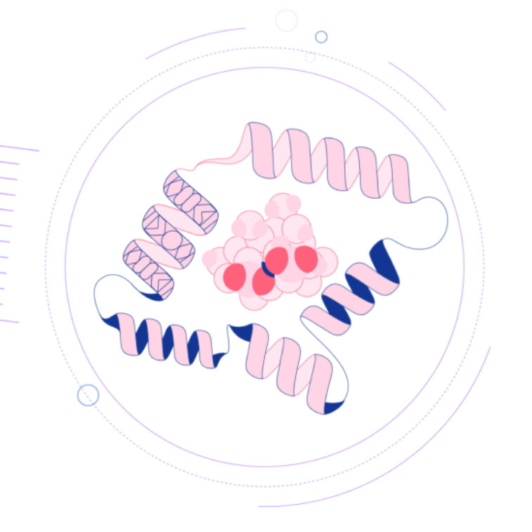

|| BLOG ||
>> Thoughts on AI, ethics, and the future as we know it.

06/05/2025
> How can we deal with algorithmic bias and opacity?
As ML systems begin to govern critical infrastructure across healthcare, law, and finance, two inextricably linked challenges threaten their future: algorithmic bias and opacity.
10/02/2025
> Project DIGITS: NVIDIA Revolutionises AI Development
NVIDIA have just launched a supercomputer you can hold in your hands.
10/02/2025
> The Manifold Hypothesis: Deep Learning's Elegant Principle
Have you ever wondered why we can so effortlessly spot a familiar face in a crowd?
05/01/2025
> 1984 Today: Unmasking AI's Potential for a Dystopian Future
The AI Revolution's Dark Side: Are We Sleepwalking into a Dystopia?

18/08/2024
> What is AlphaFold?
The protein folding problem remained unsolved for 50 years – then AlphaFold knocked on the door.
05/03/2023
> The Rome Call for AI
Representatives of the three Abrahamic religions signed a document outlining key principles for AI ethics.
17/01/2023
> How bias in AI affects society now and in the future
Bias in AI can greatly impact the course of the future due to its many repercussions.